Nile Tilapia BaP Exposure: Graph Gallery
Graphs found: 12
liver_01_sample_overview
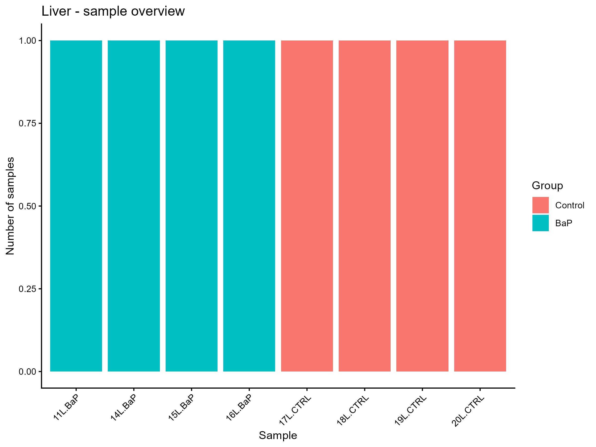
liver_04_zero_expression
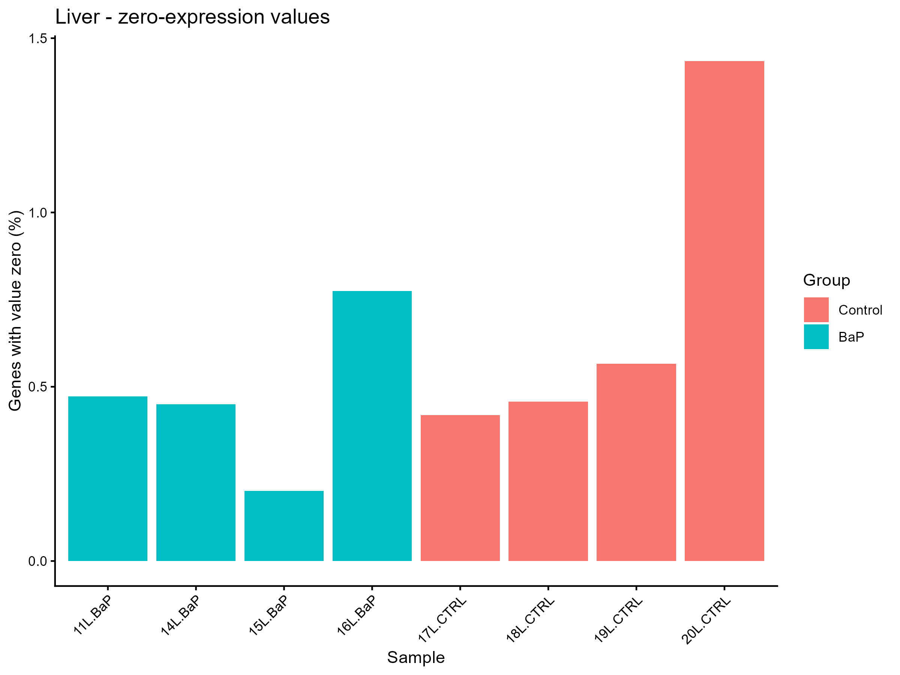
testis_01_sample_overview
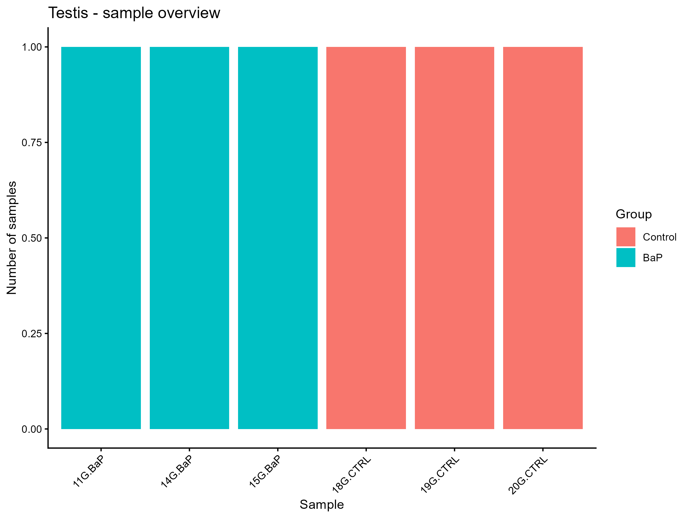
testis_04_zero_expression
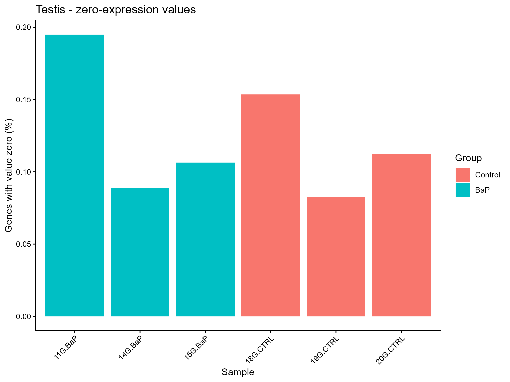
liver_02_expression_boxplots
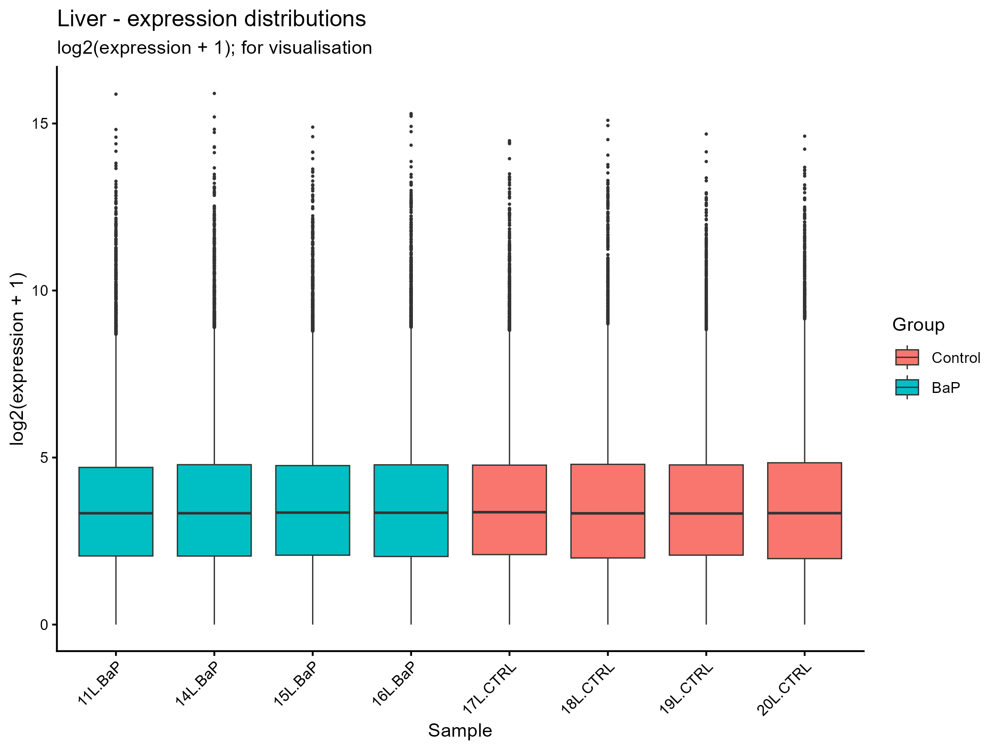
liver_03_expression_density
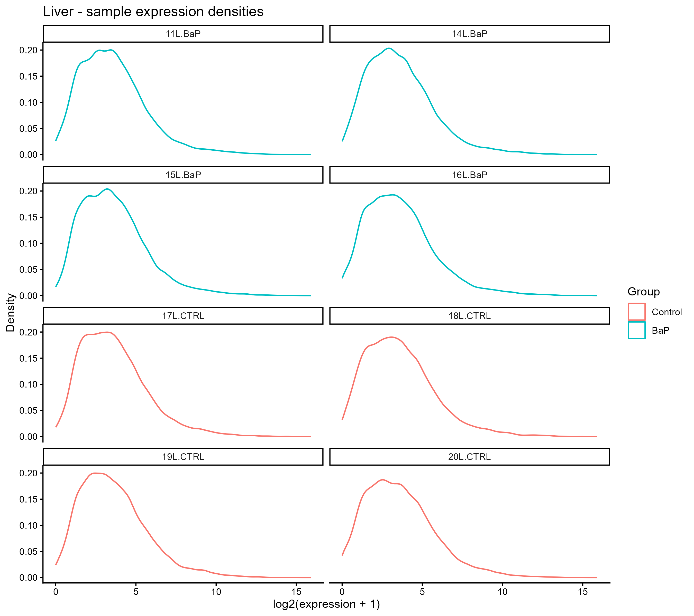
testis_02_expression_boxplots
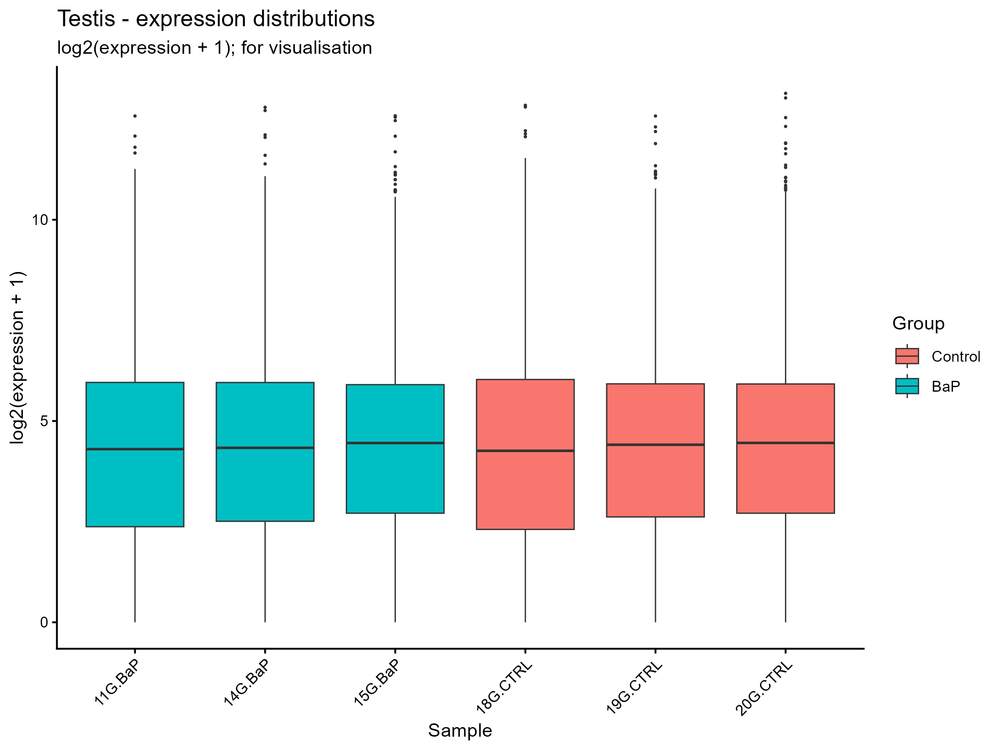
testis_03_expression_density
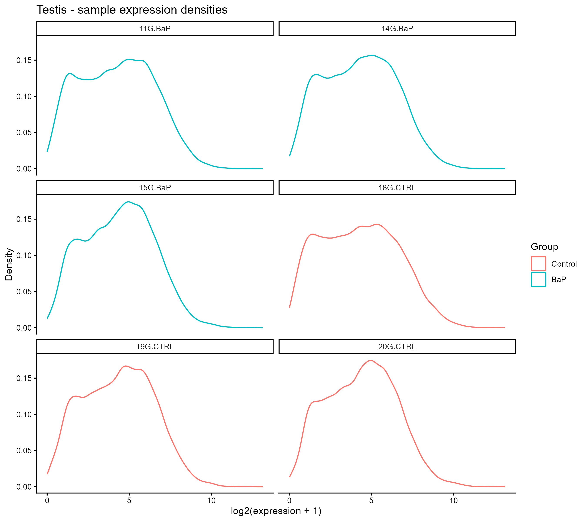
liver_05_sample_correlation
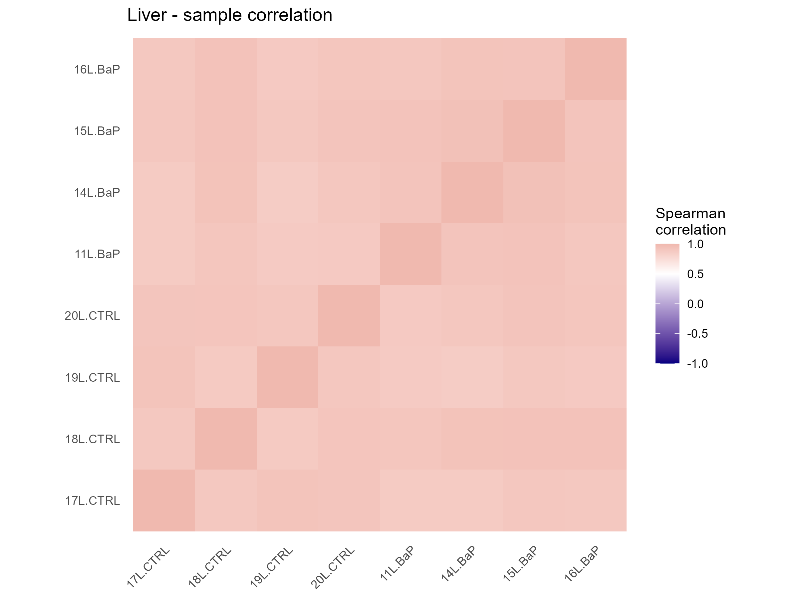
testis_05_sample_correlation
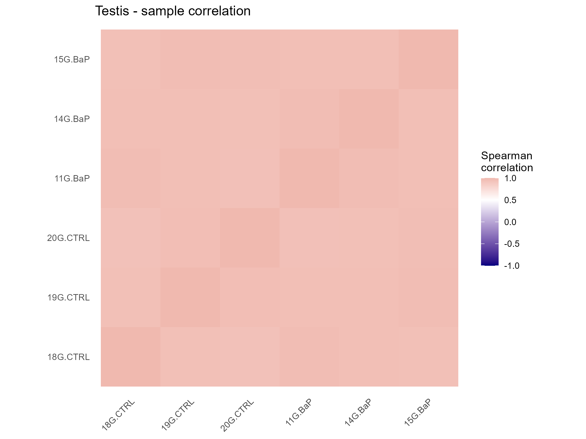
testis_06_PCA
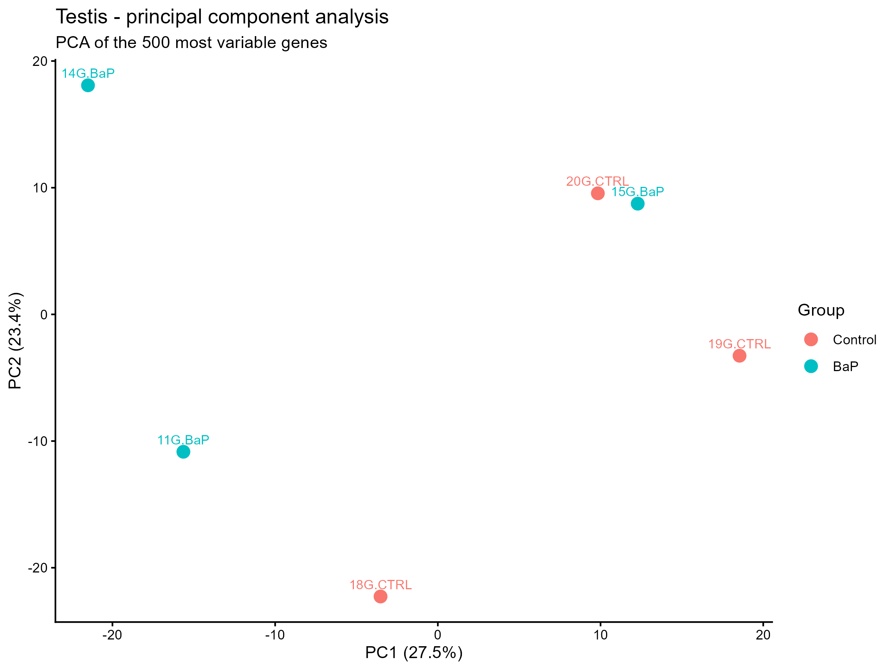